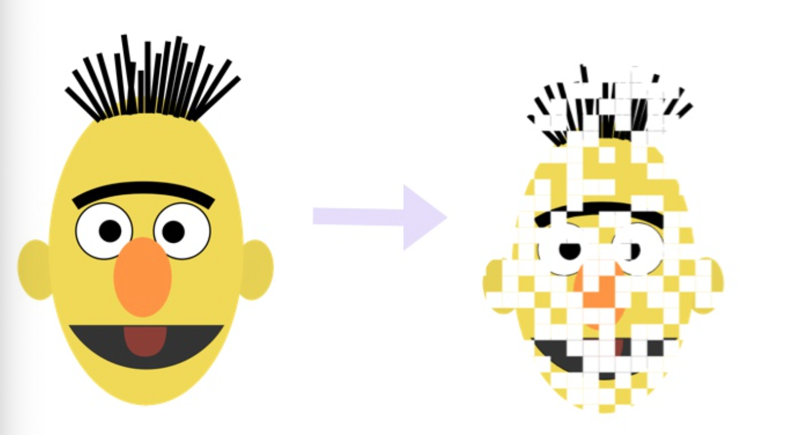
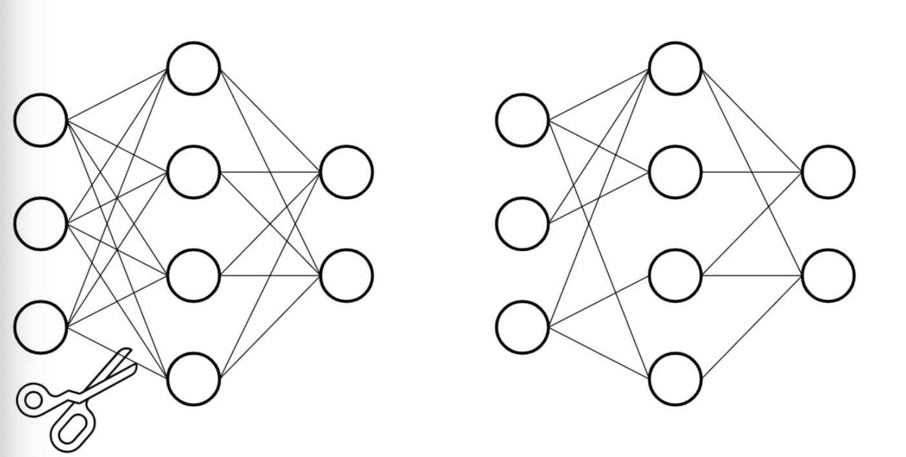

4.4 模型剪枝¶
学习目标
- 理解什么是模型剪枝.
- 掌握模型剪枝的基本操作.

1.什么是模型的剪枝¶
剪枝概念¶
- 模型剪枝(Pruning)是一种模型压缩技术，旨在通过移除神经网络中冗余或不重要的部分(如权重、神经元或整个层)来减小模型大小，同时尽量保持模型的性能。剪枝的核心思想是：神经网络通常存在大量冗余参数，许多参数对最终输出的贡献微乎其微，可以安全移除而不显著影响模型性能。
- 剪枝与其他优化技术的融合
-
剪枝+量化：先剪枝再量化可获得更好的压缩效果
-
剪枝+知识蒸馏：先使用教师模型指导剪枝后学生模型的训练

- 仿照生物的稀疏神经网络, 将大型网络中的稠密连接变成稀疏的连接, 并同样达到比较好的效果, 就是模型剪枝的原动力.

- Pytorch中对模型剪枝的支持在torch.nn.utils.prune模块中, 分以下几种剪枝方式:
- 对特定网络模块的剪枝(Pruning Model).
- 多参数模块的剪枝(Pruning multiple parameters).
- 全局剪枝(GLobal pruning).
- 用户自定义剪枝(Custom pruning).
剪枝的主要分类¶
结构化剪枝（Structured Pruning）¶
- 是什么：以网络中的完整结构单元为单位进行剪枝（如一行,或者一列,卷积滤波器、通道、整个网络层等）。
- 核心特点：
- 粗粒度：移除整个结构单元。
- 保持密集结构：剪枝后的模型仍是规则密集矩阵，无需特殊硬件支持。
非结构化剪枝（Unstructured Pruning）¶
- 是什么：以单个权重参数为单位进行剪枝（一个参数,细粒度）。
- 核心特点：
- 细粒度：可精确移除权重矩阵中的任意独立参数（如将某个权重置零）。
- 生成稀疏矩阵：剪枝后矩阵中存在大量零值，形成不规则稀疏模式。
注意: 保证Pytorch的版本在1.4.0以上, 支持剪枝操作.
2.代码实现¶
核心代码¶
BERT 全局非结构化剪枝：对所有 encoder 层注意力权重剪枝 30%，L1 范数。
"""
BERT 全局非结构化剪枝：对所有 encoder 层注意力权重剪枝 30%，L1 范数。
"""
import torch
import torch.nn.utils.prune as prune
from bert_classifer_model import BertClassifier
from utils import build_dataloader
from train import model2dev
from config import Config
conf = Config()
# 打印权重稀疏度
def compute_sparsity(model):
"""
计算权重稀疏度
:param model:
:return: 稀疏度
"""
total_params = 0
zero_params = 0
layer_num = len(model.bert.encoder.layer)
for i in range(layer_num):
weight = model.bert.encoder.layer[i].attention.self.query.weight
total_params += weight.numel()
zero_params += (weight == 0).sum().item()
return zero_params / total_params if total_params > 0 else 0
def print_weights(weight, name, rows=5, cols=5):
"""
打印权重前n行，前n列
:param weight: 权重
:param name: 名称
:param rows: 前rows行
:param cols: 前clos列
:return:
"""
print(f"\n{name}（前 {rows}x{cols}）：")
print(weight[:rows, :cols])
# 1. 加载数据
train_dataloader, test_dataloader, dev_dataloader = build_dataloader()
# 2. 加载模型
model = BertClassifier()
state_dict = torch.load(conf.model_save_path)
model.load_state_dict(state_dict, strict=False)
model.to(conf.device)
# 3. 打印减枝前模型参数
print("剪枝前模型：")
print(model)
print(model.bert.encoder.layer[0].attention.self)
print_weights(model.bert.encoder.layer[0].attention.self.query.weight,
"layer[0].attention.self.query.weight 剪枝前")
# 4. 减枝前打印稀疏度
sparsity = compute_sparsity(model)
print(f"减枝前稀疏度: {sparsity:.4f}")
# 5、减枝前模型验证准确率和f1值
report, f1score, accuracy, precision, recall = model2dev(model, dev_dataloader, conf.device)
print(f"\n剪枝前准确率: {accuracy:.4f}, F1: {f1score:.4f}")
# 6、全局非结构化剪枝：所有 encoder 层 query 权重 30%
# 6.1 获取权重
parameters_to_prune = [
(model.bert.encoder.layer[i].attention.self.query, 'weight') for i in range(12)
]
# 6.2 执行全局非结构化剪枝
prune.global_unstructured(
parameters_to_prune,
pruning_method=prune.L1Unstructured,
amount=0.3,
)
# 6.3 把被剪掉的权重真正“置为 0”并保留在参数中
for module, param in parameters_to_prune:
prune.remove(module, param)
# 7、打印剪枝后模型参数
print("\n剪枝后模型：")
print(model.bert.encoder.layer[0].attention.self)
print_weights(model.bert.encoder.layer[0].attention.self.query.weight,
"layer[0].attention.self.query.weight 剪枝后")
# 8、剪枝后稀疏度
sparsity = compute_sparsity(model)
print(f"剪枝后稀疏度: {sparsity:.4f}")
# 9、剪枝后模型验证准确率和f1值
report, f1score, accuracy, precision, recall = model2dev(model, dev_dataloader, conf.device)
print(f"\n剪枝后准确率: {accuracy:.4f}, F1: {f1score:.4f}")
# 10、保存模型权重
torch.save(model.state_dict(), conf.bert_pruning_model_save_path)
print("保存模型")
输出日志¶
剪枝前模型：
BertClassifier(
(bert): BertModel(
(embeddings): BertEmbeddings(
(word_embeddings): Embedding(21128, 768, padding_idx=0)
(position_embeddings): Embedding(512, 768)
(token_type_embeddings): Embedding(2, 768)
(LayerNorm): LayerNorm((768,), eps=1e-12, elementwise_affine=True)
(dropout): Dropout(p=0.1, inplace=False)
)
(encoder): BertEncoder(
(layer): ModuleList(
(0-11): 12 x BertLayer(
(attention): BertAttention(
(self): BertSdpaSelfAttention(
(query): Linear(in_features=768, out_features=768, bias=True)
(key): Linear(in_features=768, out_features=768, bias=True)
(value): Linear(in_features=768, out_features=768, bias=True)
(dropout): Dropout(p=0.1, inplace=False)
)
(output): BertSelfOutput(
(dense): Linear(in_features=768, out_features=768, bias=True)
(LayerNorm): LayerNorm((768,), eps=1e-12, elementwise_affine=True)
(dropout): Dropout(p=0.1, inplace=False)
)
)
(intermediate): BertIntermediate(
(dense): Linear(in_features=768, out_features=3072, bias=True)
(intermediate_act_fn): GELUActivation()
)
(output): BertOutput(
(dense): Linear(in_features=3072, out_features=768, bias=True)
(LayerNorm): LayerNorm((768,), eps=1e-12, elementwise_affine=True)
(dropout): Dropout(p=0.1, inplace=False)
)
)
)
)
(pooler): BertPooler(
(dense): Linear(in_features=768, out_features=768, bias=True)
(activation): Tanh()
)
)
(dropout): Dropout(p=0.1, inplace=False)
(fc): Linear(in_features=768, out_features=10, bias=True)
)
layer[0].attention.self.query.weight 剪枝前（前 5x5）：
tensor([[ 0.1116, -0.0124, 0.0081, 0.0433, -0.0385],
[ 0.0043, -0.0238, -0.0093, 0.0224, 0.0834],
[ 0.0126, 0.0047, 0.0382, -0.0141, -0.0086],
[-0.0026, -0.0473, -0.0293, 0.0555, -0.0172],
[-0.0509, 0.0510, 0.0164, -0.0172, 0.0724]],
grad_fn=<SliceBackward0>)
减枝前稀疏度: 0.0000
Evaluating model on dev set: 100%|██████████| 157/157 [01:10<00:00, 2.24it/s]
剪枝前准确率: 0.9348, F1: 0.9349
剪枝后模型：
layer[0].attention.self.query.weight 剪枝后（前 5x5）：
tensor([[ 0.1116, -0.0000, 0.0000, 0.0433, -0.0385],
[ 0.0000, -0.0238, -0.0000, 0.0224, 0.0834],
[ 0.0000, 0.0000, 0.0382, -0.0000, -0.0000],
[-0.0000, -0.0473, -0.0293, 0.0555, -0.0172],
[-0.0509, 0.0510, 0.0000, -0.0172, 0.0724]],
grad_fn=<SliceBackward0>)
剪枝后稀疏度: 0.3000
Evaluating model on dev set: 100%|██████████| 157/157 [01:07<00:00, 2.32it/s]
剪枝后准确率: 0.9359, F1: 0.9360
保存模型
3.本小节总结¶
- 本部分完成了全局非结构化剪枝：对所有 encoder 层注意力权重剪枝 30%，L1 范数。